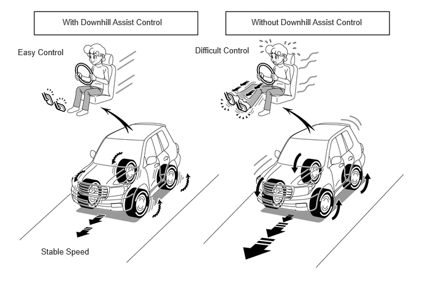

- Drive mode is 4H
- Shift position is not in P
- Rear differential is free*
- Accelerator pedal and brake pedal are not operated
- Vehicle driven downhill at 30 km/h or less
| Last Modified: 10-07-2025 | 6.11:8.1.0 | Doc ID: NM100000002GOKM |
| Model Year Start: 2024 | Model: Tacoma | Prod Date Range: [12/2023 - ] |
| Title: BRAKE CONTROL / DYNAMIC CONTROL SYSTEMS: BRAKE CONTROL SYSTEM (for Gasoline Model): DOWNHILL ASSIST CONTROL; 2024 - 2026 MY Tacoma [12/2023 - ] | ||
DOWNHILL ASSIST CONTROL
SYSTEM CONTROL
(a) Downhill assist control is a system that enables stable driving down steep slopes by controlling the brake fluid pressure of the 4 wheels automatically to maintain a set low vehicle speed while preventing the tires from locking. The vehicle speed switching function also enables the vehicle speed to be controlled with a switch operation.
(b) This is effective when driving down steep slopes where sufficient deceleration is not possible with only the engine brake.
(c) Downhill Assist Control Operation Conditions
(1) Downhill Assist Control Start Conditions
- When the DAC/CRAWL switch is pressed while all of the following conditions have been met, the downhill assist control indicator illuminates and downhill assist control becomes available.
| *: Models with rear differential lock system |
|
|
HINT:
- Drive downhill in a shift position that applies the engine brake sufficiently.
- When the accelerator pedal or brake pedal is operated during control, control is performed to prevent interference with the acceleration or deceleration operation of the driver.
- When entering a slope, proceed at a sufficiently low vehicle speed.
- When the shift position is changed to N, downhill assist control is available for control but the downhill assist control indicator blinks. This blinking is meant to notify the driver that sufficient engine brake force cannot be obtained and that the load on the brake will increase.
(2) Downhill Assist Control Cancellation Conditions
- When any of the following conditions is met, the downhill assist control available status is canceled. (When downhill assist control is operating, the brake fluid pressure is released gradually and the slip indicator blinks until the control available status is canceled)
| *: Models with rear differential lock system |
|
HINT:
- When turning downhill assist control off with the DAC/CRAWL switch, perform the operation while the indicator of the DAC/CRAWL switch is illuminated
- When the shift position is changed to N during control, downhill assist control continues to be available for control but the downhill assist control indicator blinks. This blinking is meant to notify the driver that sufficient engine brake force cannot be obtained and that the load on the brake will increase.
- When the brake actuator temperature rises or the vehicle speed reaches 30 km/h or higher during control, the downhill assist control indicator blinks and the downhill assist control stops temporarily.
(d) Downhill Assist Control Effects
(1) The vehicle can be controlled to a set low vehicle speed when driving down a steep slope, enabling the driver to concentrate on the steering operation without needing to worry about operating the brake or accelerator.
(2) On slippery slopes as well, the vehicle can be driven downhill at a low vehicle speed without locking the tires, and on rough and bumpy slopes, the vehicle can be driven downhill with minimal shaking, which helps ensure vehicle stability.
(3) The tires do not lock during downhill assist control, which helps ensure steering performance when avoiding obstacles or changing lanes.
(e) Downhill Assist Control Description
(1) Information such as the DAC/CRAWL switch and drive mode signals, and whether the accelerator and brake are operated, is input from the various sensors and ECUs, and the availability of downhill assist control operation is determined.
(2) The target speed is determined from the inclination angle and operation of the mode selection switch by the driver.
(3) The vehicle acceleration condition is detected from the speed of each wheel. When control is determined to be necessary, the brake fluid pressure of each wheel is controlled to make the speed of each wheel converge with the target vehicle speed.
(f) Vehicle Speed Switching Function
(1) The set vehicle speed can be switched by operating the mode select switch during downhill assist control. During switching, the set vehicle speed is displayed on the multi-information display.